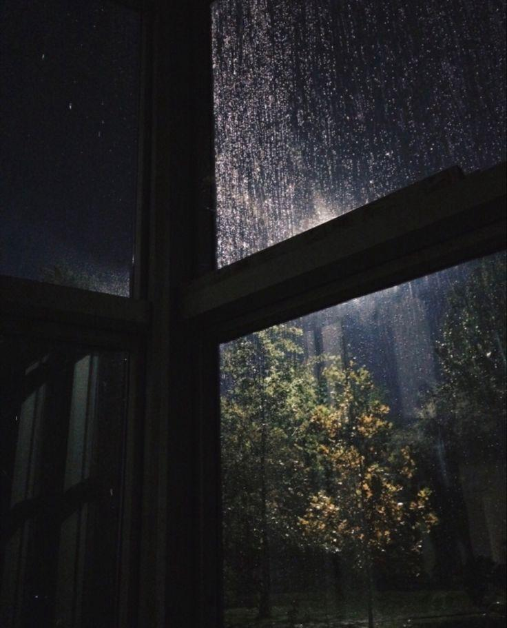

We Must Imagine Sacchin Happy
September 21, 2025

Camus once wrote that we must imagine Sisyphus happy. The man was condemned to roll a boulder up a hill, only to watch it roll back down again, forever. Yet Camus insisted that the meaning wasn't in reaching the top, but in the climb itself. That line has lingered in the back of my mind for years, but it's taken on a new weight lately.
This month I crossed a quiet milestone: one year living in the United States. It is the first time in my life that I have gone a full year without seeing my parents. Growing up, there was never a gap like this. Even during the most hectic stretches of school, or when I felt independent, home was always there. A weekend train ride away, or a short flight. Now it's an ocean and time zones away. The distance has been sharper than I expected, sometimes catching me off guard in small moments, a phone call where my parents' voices crackle just a little, a holiday dinner spent with friends when I know my family is gathering without me, or simply waking up and realizing that the safety net of presence has been replaced by absence.
This past year has been a cycle of work and study, one that often feels repetitive. Robotics code that doesn't compile. Nights in the lab, watching logs print by the hundreds. Weekends that blur into weekdays because there is always something more to do. From the outside, it probably looks like a loop: Sacchin and his endless experiments, Sacchin and his deadlines, Sacchin rolling his boulder up the hill. But the truth is that in between the monotony, I have learned to notice the sparks. The moment when a robot finally moves as intended after weeks of debugging. The curiosity that pulls me into another late night even when I tell myself I should stop. The smile that comes not from a grand victory, but from the quiet relief of knowing that, for now, something works.
And yet the most powerful lesson of the year didn't come from research at all. It came when I found myself in the emergency room. It wasn't life-threatening, but it was enough to rattle me. I sat there in a hectic ER waiting room, fluorescent lights glaring overhead, listening to the hum of machines and the shuffle of nurses in the hallway. For the first time, I thought about what it means to be far from home in moments of vulnerability. If my parents had been here, they would have been at my side, worrying and fussing in the way that parents do. But they weren't. I was alone, and that realization hit harder than the diagnosis.
Sitting in that ER bed, I felt the fragility of things in a way that no academic challenge had ever made me feel. Code can always be rerun, experiments can always be reset, but time and health don't work that way. And for the first time, I had to ask myself: if all of this, the late nights, the long hours, the sacrifices, were stripped away, what would actually matter? Where does happiness live when the boulder gets too heavy to push?
That question is what drew me back to Camus, and strangely enough, to A Man Called Otto. Otto is a man who has lost his wife, the love of his life, and with her he feels he has lost all reason to keep living. The film begins in despair, with Otto isolated and bitter. He measures his days by routines, by obligations, by the mechanical act of keeping things in order. In many ways, Otto is Sisyphus, condemned to roll his boulder in the form of loneliness and grief. But then small acts of connection begin to break through. A new neighbor shows up at his door with food. A stray cat insists on company. A young family refuses to let him disappear into silence. Piece by piece, the meaning returns, not because Otto's pain disappears, but because love, community, and kindness stitch themselves back into his climb.
That story feels close to mine, even if the details are different. I have not lost what Otto lost, but I understand what it feels like to live in cycles that appear bleak. What I take from Otto's life is that meaning is not waiting at the top of the hill. It's hidden in the interruptions, in the people and moments that pull you back into the world when you least expect it. In my own life, it's laughing with friends over cheap dinners after exhausting days. It's the way Pokémon Platinum still makes me feel like a kid stepping into a limitless world. It's movies like About Time that remind me that the magic is not in rewriting the past, but in paying attention to the present.
One year into this journey, I've started to realize that the climb itself is the gift. The distance from my parents has made me treasure every late-night call, every short text that says "take care of yourself." The ER visit reminded me how quickly everything can change, but also how resilient I can be when I need to stand on my own. Research has taught me that joy is not in the paper accepted or the project completed, but in the act of building, breaking, and building again.
So when I say we must imagine Sacchin happy, it's not because the path is smooth or the boulder is light. It's because happiness doesn't wait at the summit. It lives in the Pokémon battles that pull me back to childhood. It lives in the friends who show up with takeout and laughter. It lives in the stories that remind me to notice the beauty of ordinary days. It lives even in the sterile ER, where I discovered that fragility is also a reminder of what matters.
The boulder is heavy. But it is mine to push. And as I climb, I get to notice all the small, luminous things that make it worth carrying.
|